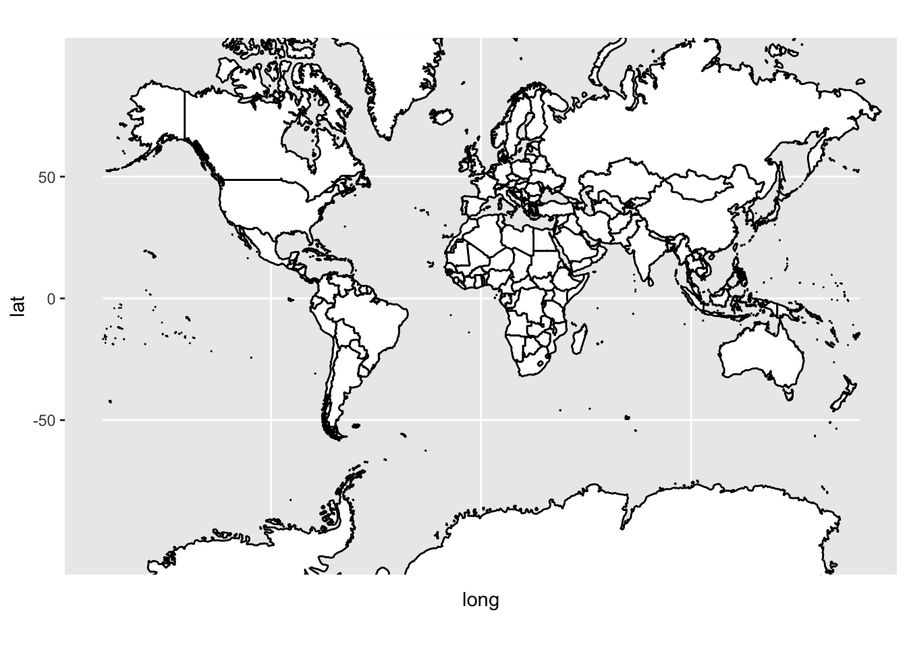
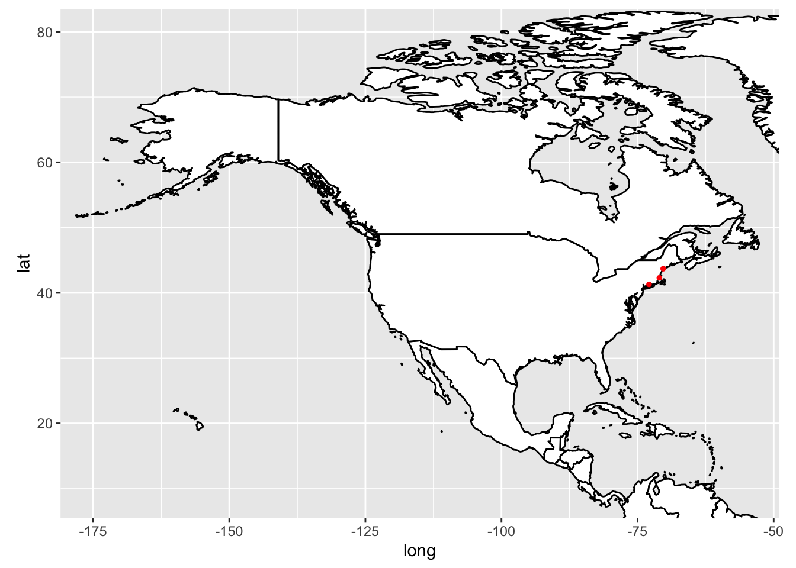
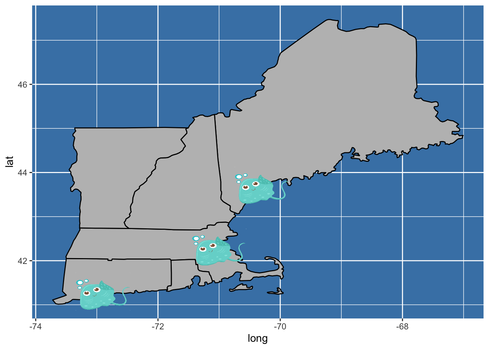
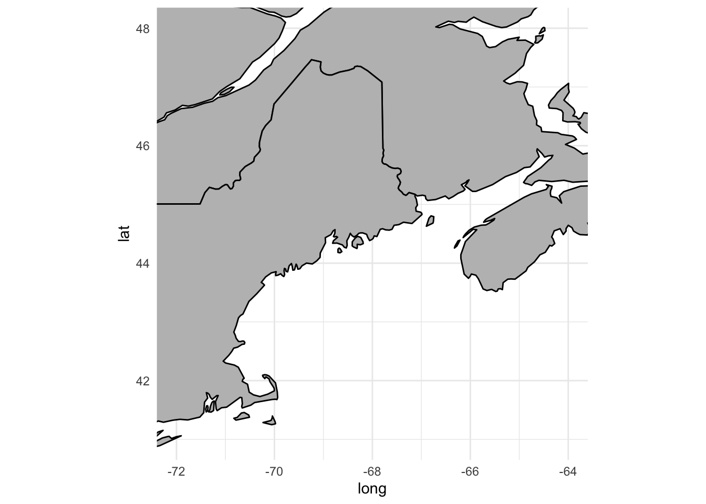
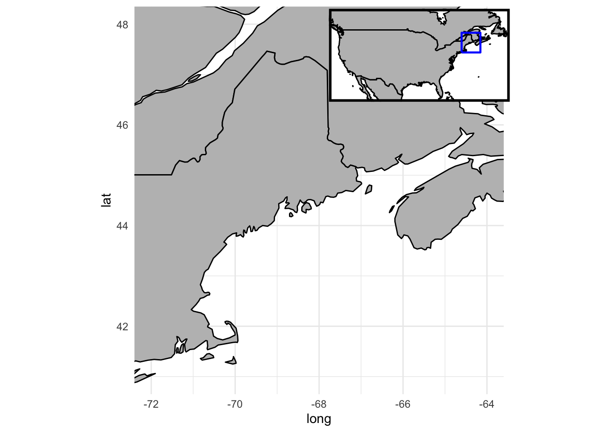
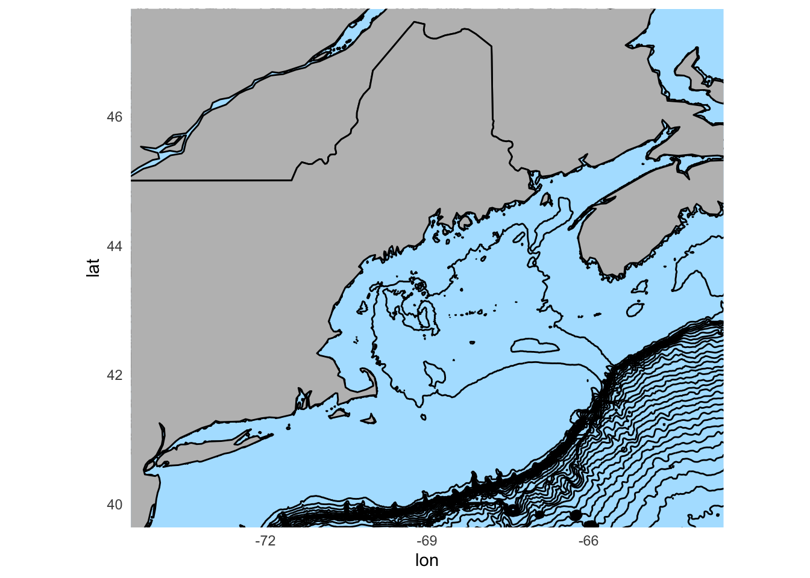
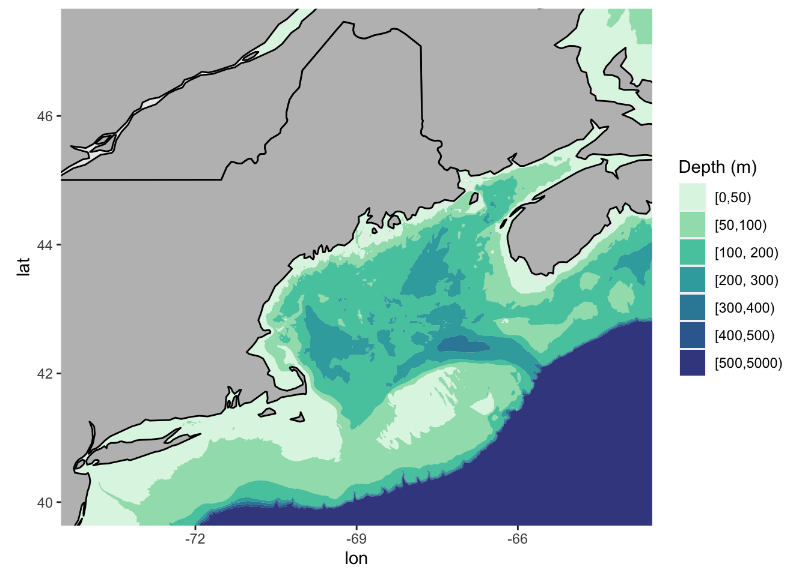

library(tidyverse) # Use for data manipulation
library(ggplot2) # Create plot objects
library(ggimage) # Allows plotting of images on graphs
library(marmap) # Access NOAA data
library(metR) # Color contours on map
library(mapproj)Mapping with ggplot
R
R Graphics
Post revised 2022-08
Basics of Mapping
Polygons and shapefiles can be plotted using the ggplot2 package to create maps.
To get started there are a few packages to load…
… some example data to add to maps…
dat <- data.frame(longpt =c(-70.3, -72.9, -71.0),
latpt = c(43.7, 41.3, 42.3),
names = c("Portland", "New Haven","Boston"),
imagecol = rep("https://www.pngmart.com/files/4/Cute-Starfish-PNG-Clipart.png",3),
stringsAsFactors = FALSE,
year = c(1,2,3))… and some polygons from the ggplot2 package to work with.
states <- map_data("state")
NEUS <- subset(states, region %in% c("massachusetts",
"new hampshire",
"vermont",
"maine",
"rhode island",
"connecticut"))
World <- map_data("world")A simple world map can be created by plotting the World polygon and specifying a coordinate system using the coord_map() function. Note: there are many coord_() options to choose from.
# Start with a world map
ggplot() +
geom_polygon(data = World,
aes(x=long, y=lat, group = group),
fill = "white",
color = "black") +
coord_map(xlim = c(-180, 180)) # Here xlim removes horizontal lines due to bug
Restrict the geographic region using coord_fixed() and add points for three U.S. cities using geom_point().
ggplot() +
geom_polygon(data=World,
aes(x = long, y = lat, group = group),
fill = "white",
color = "black") +
geom_point(data = dat, aes(x = longpt, y = latpt), color = "red", size = 1) +
coord_fixed(xlim = c(-175, -55), ylim = c(9, 80), ratio = 1.2)# Limits lat/long coordinates plotted
Alternatively, maps may be created by plotting specific state polygons, and geom_image() can be used to plot an image rather than points.
NEUS <- ggplot() +
geom_polygon(data = NEUS,
aes(x = long, y = lat, group = group),
fill = "grey",
color = "black") +
geom_point(data = dat, aes(x = longpt, y = latpt), color = "blue", size = 3) +
geom_image(data=dat, mapping = aes(x = longpt, y = latpt, image = imagecol), size = 0.12) + # if size = is inside aes() then you will get an error that "col" argument isn't provided
theme(panel.background = element_rect(fill = "steelblue"))
NEUS
Note: without specifying the coordinate system the states appear stretched.
Inset Maps
Map objects may be layered by treating them as grobs (graphical objects).
To create an inset map, turn the inset region map into a grob using ggplotGrob(). The inset map should include a polygon highlighting the region mapped in the larger map. This can be accomplished using the geom_path() function and the latitudinal and longitudinal coordinates highlighted should match the dimensions of the larger map.
# Highlight region mapped in larger figure
Region <- data.frame(long = c(-72, -72, -64, -64, -72),
lat = c(41, 48, 48, 41, 41))
# Inset map
NorthAmerica <- ggplotGrob(
ggplot() +
geom_polygon(data = World,
aes(x = long, y = lat, group = group),
fill = "grey",
color = "black") +
coord_fixed(xlim = c(-125, -55), ylim = c(25, 55), ratio = 1.2) +
geom_path(data = Region, aes(x = long, y = lat), size = 0.8, color = "blue") +
theme_bw() +
theme(line = element_blank(), text = element_blank(), panel.border = element_rect(color = "black", fill = NULL, size = 2), panel.background = element_rect(fill = "white"), plot.background = element_rect(fill = "transparent", color = NA)))Then create the larger map that the inset will be added to:
GOM <- ggplot() +
geom_polygon(data = World,
aes(x=long, y = lat, group = group),
fill = "grey",
color = "black") +
coord_fixed(xlim = c(-72, -64), ylim = c(41, 48), ratio = 1.2) + # could use world high res data instead
theme_minimal()
GOM
To complete the inset map, combine the larger map and inset grob. xmin/xmax and ymin/ymax define the position of the inset map:
FinalPlot <- GOM +
annotation_custom(grob = NorthAmerica,
xmin = -68, xmax = -63.3,
ymin = 45.5, ymax = 49.2) # Determines placement & size of incert
FinalPlot
Adding Topography
Physical features like topography and bathymetry may be added as data layers to ggplots.
The marmap package provides access to government NOAA data:
Bathy <- getNOAA.bathy(lon1 = -75, lon2 = -62,
lat1 = 39, lat2 = 48, resolution = 1)Querying NOAA database ...This may take seconds to minutes, depending on grid sizeBuilding bathy matrix ...# Convert data to matrix:
Bathy_Final <- as.matrix(Bathy)
class(Bathy_Final) <- "matrix"
# Now reshape it to long format and plot
BathyData <- Bathy_Final %>%
as.data.frame() %>%
rownames_to_column(var = "lon") %>%
gather(lat, value, -1) %>%
mutate_all(funs(as.numeric))Warning: `funs()` was deprecated in dplyr 0.8.0.
Please use a list of either functions or lambdas:
# Simple named list:
list(mean = mean, median = median)
# Auto named with `tibble::lst()`:
tibble::lst(mean, median)
# Using lambdas
list(~ mean(., trim = .2), ~ median(., na.rm = TRUE))
This warning is displayed once every 8 hours.
Call `lifecycle::last_lifecycle_warnings()` to see where this warning was generated.head(BathyData) lon lat value
1 -75.00000 39 -5
2 -74.98331 39 -7
3 -74.96662 39 -5
4 -74.94994 39 1
5 -74.93325 39 10
6 -74.91656 39 10The geom_contour() function will highlight physical features using bathymetric lines:
BathyData %>%
ggplot() +
geom_contour(aes(x = lon, y = lat, z = value),
bins = 50, colour = "black") + # bins determine # of contours (try 50 vs. 100)
geom_polygon(data = World,
aes(x=long, y = lat, group = group),
fill = "grey",
color = "black") +
coord_fixed(xlim = c(-74, -64), ylim = c(40, 47.3), ratio = 1.2) +
theme(panel.background = element_rect(fill = "lightskyblue1"), line = element_blank())
Alternatively, the geom_contour_fill() function may be used to display color-differentiated bathymetric features:
BathyData %>%
ggplot() +
geom_contour_filled(data = BathyData, aes(x = lon, y = lat, z = value),
breaks = c(0, -50, -100, -200, -300, -400, -500, -5000)) + # breaks determine # of contours
scale_fill_manual(values = c("#DEF5E5FF", "#A0DFB9FF", "#54C9ADFF", "#38AAACFF", "#348AA6FF", "#366A9FFF", "#40498EFF"), name = "Depth (m)", labels = c("[0,50)", "[50,100)", "[100, 200)", "[200, 300)", "[300,400)", "[400,500)", "[500,5000)" )) + # Add custom depth colors and legend labels
geom_polygon(data = World,
aes(x=long, y = lat, group = group),
fill = "grey",
color = "black") +
coord_fixed(xlim = c(-74, -64), ylim = c(40, 47.3), ratio = 1.2) 